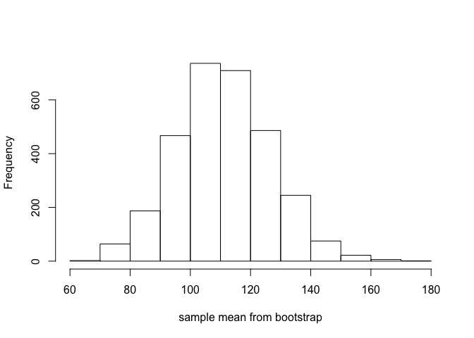

Introduction of Monte Carlo & Bootstrap Procedures
1. Method of Monte Carlo
1-a. Concept and Generating Random Numbers
요즘 현대 통계학에서는 Asymptotic techniques가 광범위하게 적용되고 있다.
허나 이 근사적 접근방법은 sample size가 무한할 때만 극한분포를 얻어낼 수 있다. 실제로 이러한 size에 대한 제약으로 인해 Asymptotic techniques는 여러가지 문제점을 갖고 있다.
-
현실에서는 sample size가 유한하다는 것. 그렇기에 유한샘플을 이용하여 통계방법론적 empirical check로 접근을 한다.
-
가끔 연산이 너무 복잡하여 limiting distribution을 구할 수가 없다.
위와 같은 문제점으로 인해 근사적 접근이 어려울 때 우리는 그 대안으로 Monte Carlo 방법을 사용한다. 이는 특정한 분포 혹은 샘플로부터 관측치들을 생성하는 방법을 말한다.
이 방법을 위해 우리가 필요한 것은 \(Unif(0,1)\) 의 분포에서 난수를 생성하는 것이다.
과거에 컴퓨터가 발전하지 않았을 때는 이러한 난수를 생성하는 것이 다소 복잡하였지만, 요즘은 statistical software pacakages를 통해 쉽게 \(Unif(0,1)\)을 따르는 난수를 생성할 수 있다.
자 그러면 간단하게 \(Unif(0,1)\)분포를 이용하여 이산형분포에서 무작위 난수를 생성해보자!
이를 풀어서 설명한다면, 균등분포에 특정한 규칙을 적용하여 난수를 생성한 뒤, 이 sample들을 우리의 목표 이산형분포에서 추출한 난수처럼 만드는 것이라고 볼 수 있을 것이다.
그 예로 \(B(10,1/3)\)의 분포를 따르는 난수를 생성해보자.
만약 \(U\)가 \(Unif(0,1)\)을 따르는 확률변수라 하면, 확률변수 \(X\)는 아래와 같이 만들어 볼 수가 있다. $\(X= \begin{cases} 1\ if\ 0< U \leq 1/3\\ 0\ if\ 1/3 \leq U < 1 \end{cases}\)$
set.seed(2013122059)
n <- 10
U <- runif(n,0,1)
X <- rep(0,n)
for (i in 1:10){
if (U[i] <=1/3){X[i]=1}
}
U
## [1] 0.56813976 0.35981586 0.49809107 0.29650199 0.50092175 0.16731997
## [7] 0.52250479 0.84050584 0.06741438 0.27603992
X
## [1] 0 0 0 1 0 1 0 0 1 1
위의 규칙을 통해 간단하게 cutoff를 1/3로 정하여 1/3을 넘지 못하면 X는 1로, 그렇지 않다면 0으로 변환해주는 방법을 사용했다.
그리하여 U와 X의 값을 살펴보면, cutoff를 넘지 못하는 U에 대해서는 X가 1로 반환되는 것을 확인할 수 있다.
이를 조금 직관적으로 설명하면 아래처럼 풀어 쓸 수 있다.
\(Bin(10,1/3)\)을 따르는 분포라는 것은, 1/3의 확률로 event가 성공을하고, 2/3의 확률로 실패를 한다는 것이고, 이를 높이와 밑변의 길이가 각각 1인 정사각형의 면적에서(\(Unif(0,1)\)) 1/3에 해당하는 면적을 칠하고, 칠한 부분은 1(즉 이항분포에서 성공을 의미)로 반환하는 방법을 사용한 것이라고 볼 수 있다.
여기에 조금 더 나아간 예제로, 서로 iid인 두개의 Uniform 분포를 이용하여 \(\pi\)의 값도 추정을 해볼 수 있다.
\(\pi\)를 추정하는 방법은 아래와 같다.
여기서 \(U_1\)과 \(U_2\)는 각각 \(Unif(0,1)\)의 분포를 따른다.
\(X\)의 평균을 여기서 구해본다면, $E(X)= \sum x\cdot p(x)= 1\cdot p(x=1) + 0\cdot p(x=0) $ 이므로 \(1\cdot\frac{\pi}{4}+0\cdot (1-\frac{\pi}{4})= \frac{\pi}{4}\)가 된다.
고로 \(\mu= E(X) = \pi/4\)이며, Weak Law of Large Numbers에 의해서 \(4E(\bar{X})\)는 \(\pi\)의 consistent estimator가 된다.
실제로 n의 사이즈를 점점 키우게 되면, \(4E(\bar{X})\)는 점점 \(\pi\)값으로 수렴하게 됨을 확인할 수 있다.
위에서 언급한 내용을 작성한 코드는 아래와 같다.
set.seed(2013122059)
iteration <- c(30,100,1000,5000,1000000)
mean_convergence<- rep(0,5)
CI_length_convergence <- rep(0,5)
for (i in 1:length(iteration)){
U1 <- runif(iteration[i],0,1)
U2 <- runif(iteration[i],0,1)
X <- rep(0,iteration[i])
for ( j in 1:iteration[i])
if (U1[j]^2+U2[j]^2 <=1){X[j]=1}
mean_convergence[i] <- 4*mean(X)
CI_length_convergence[i] <- ((1.96*4*mean(X)*(1-mean(X)))/iteration[i])
}
mean_convergence
## [1] 2.666667 2.800000 3.152000 3.138400 3.142284
CI_length_convergence
## [1] 5.807407e-02 1.646400e-02 1.309719e-03 2.649965e-04 1.320642e-06
Sample size가 점점 커질수록, 신뢰구간의 너비는 짧아지고 평균 또한 \(\pi\)값으로 점점 가까워짐을 확인할 수 있었다.
Theorem 4.8.1
위에서 우리는 몬테카를로 방법의 간단한 예제와 랜덤난수생성에 대해서 배웠다. 시뮬레이션을 행할 때, 우리는 특정한 분포를 가진 샘플들을 추출하는 경우가 많다. 하지만 단순히 rexp(), rnorm(), rpois() 등의 난수생성 패키지를 사용하는 것이 아니라 \(Unif(0,1)\) 분포를 통해 특정 분포에서 샘플링하는 효과를 내는 것을 배웠다.
이렇게 균등분포를 통해 타분포의 난수 생성이 가능한 것은 바로 이 Theorem 4.8.1 에 담겨있다.
Theorem은 다음과 같다.
\(U \sim Unif(0,1)\), Let F be a continuous distribution function., Then \(X= F^{-1}(U)\) has distribution function F
대충 해석을 해보면 U가 균등분포를 따르고, 함수 F를 어떠한 누적분포함수라고 하였을 때, 확률변수 X는 함수 F를 누적확률분포로 갖는다 라는 뜻이다.
해석을 해도 전혀 감이 오지 않지만, 다시 이해를 해본다면 확률변수 X의 cdf는 Unif(0,1)을 따른 다는 뜻이다.
함수 F가 strictly increasing function이라고 가정을 한 후, 확률변수 X가 함수 F를 cdf로 갖는지 확인하여보자.
자 이렇게 확률변수 X가 누적확률분포함수로 F를 갖는다는 증명이 끝났다. (?!)
마지막 등호가 성립하는 이유는 확률변수 U가 \(Unif(0,1)\)을 따르기 때문이다.
\(Unif(0,1)\)이라는 확률변수는 면적이 1인 정사각형안에서 자유롭게 돌아다니는 놈이므로, 그 사각형 안에서 \(F(x)\)보다 작을 확률이라 함은 균등분포의 특징으로 인해 x축과 y축이 각각 \((F(x),F(x))\)인 지점으로 둘러쌓인 영역이기 때문에 \(P[U \leq F(x)] = F(x)\)가 되는 것이다.
위의 식을 살짝 틀어서 생각해보면 \(U = F(X)\)이며, 이는 확률변수 X가 누적분포함수로 F를 갖는다고 하였는데 그 누적분포함수가 U라는 것이다. 즉 어떤 확률변수 X의 cdf가 \(Unif(0,1)\)을 따른다는 것이다.
실제로 직접 간단한 계산을 해보면 \(P[F(X) \leq x]= x\)를 통해 F(X)의 cdf가 x이므로 이를 x에 대해서 미분한 1은 \(Unif(0,1)\)의 pdf라는 것을 확인할 수 있다.
\(function\ F\)는 strictly increasing하는 함수로 가정하였기에, F는 항상 Inverse function이 존재한다. 고로 우리는 어떠한 확률변수 X의 난수를 생성하고자 할때, 그저 \(F(\cdot)\)을 알고, 이의 역함수를 구할 수 있다면, Uniform(0,1)을 이용하여 생성이 가능하다는 것을 의미한다.
일례로 Uniform(0,1)분포를 통해 지수분포 난수 X를 생성하고 싶다면, \(X = -log(1-u)\)를 통해 구하는 것이 가능하다.
1-b. Monte Carlo Integration
몬테카를로 방법은 적분과정에서도 적용될 수 있다. 우리가 \(\int_a^bg(x)dx\)를 구하려 할 때, 함수 g의 anti-derivative가 존재하지 않거나 이를 알 수 없는 경우가 이에 해당한다.
Monte Carlo Integration을 사용하면 위의 적분을 아래와 같이 표현할 수 있다.
우리는 \(X_1, X_2,..,X_n\)들의 랜덤샘플을 uniform(a,b)의 분포에서 추출하여 생성할 수 있으며, \(Y_i = (b-a)g(X_i)\)를 계산하면 된다.
그렇다면, \(\bar{Y}\)는 \(\int_a^bg(x)dx\)의 consistent estimator가 된다.
$* \frac{\sum_{i=1}^ng(x_i)}{n} \xrightarrow{P} E[g(X_1)]\ by\ WLLN $
2. Bootstrap Procedures
Bootstrap기법을 다루기 앞서서 우리가 기본적으로 다루는 통계적인 추정의 단계를 간단하게 읽갈무리를 해보자.
\(\mathbf{X}'=(X_1,...,X_n)\)를 cdf \(F(x;\theta)\)에서 얻은 random sample이라고 가정해보자. 그렇다면 \(\mathbf{x}'=(x_1,...,x_n)\)은 random sample \(\mathbf{X}'\)에서 관측된 값 observed values가 된다.
여기서 통계적인 추정을 함에 있어 우리는 모수 \(\theta\)에 대한 estimationd을 하는 것에 주목한다.
그리고 우리는 이 모수 \(\theta\)를 향해 구간추정과 점추정을 통해 전진한다.
\(\theta\)에 대한 추정량을 \(\hat\theta_n\)이라 하자.
일반적인 방법으로는, 우리는 sample size n을 무한히 늘려 근사분포를 추정하고, 이 근사분포의 모수값으로 기존 모수인 \(\theta\)를 추정한다.
만약 우리가 아래와 같은 관계식을 유도할 수 있다면,
$$(\hat\theta_n-1.96\frac{\hat\sigma}{\sqrt{n}},\ \hat\theta_n+1.96\frac{\hat\sigma}{\sqrt{n}}) $$
위와 같은 신뢰구간이 모수 \(\theta\)에 대한 \(100(1-\alpha)\)% 근사신뢰구간이 된다.
하지만, 실제로는 위의 근사적인 접근방식을 적용하기에 매우 어려운 경우가 많다. sample size를 무한히 늘리는 일은 이론적으로는 가능하지만, 현실에서 적용하기에는 어려운 경우가 많으며, 근사분포를 찾기 매우어려운 경우는 적용할 수가 없다.
우리가 추정량 \(\hat\theta_n\)에 대한 분포를 알지 못하지만, 아래와 같이 만약 동일한 사이즈의 무한한 random sample을 갖고 있다고한다면,
$\(\mathbf{x_1}'=(x_{11},x_{12},...,x_{1n})\)$
$\(\mathbf{x_1}'=(x_{21},x_{22},...,x_{2n})\)$
$\(.\)$
$\(.\)$
$\(.\)$
$\(from\ a\ cdf\ F(x;\theta)\)$
우리는 \(\hat\theta_1 = \hat\theta(\mathbf{x_1}'),..,\)를 계산할 수 있으며, 이들의 히스토그램을 만들 수가 있다. 그러면 즉 이 히스토그램은 \(\hat\theta\)의 분포와 같게 된다.
하지만 무한한 random sample이 아니라 단 한개의 sample만 존재할 때 문제점이 생긴다.
이럴 때 적용하는 것이 Bootstrap Procedure이다.
이는 간단하게 original sample을 계속 복원추출하여 sample을 여러개 복제하는 것과 같다.
resampling된 새로운 샘플들을 \(\mathbf{x^{*}_1}'=(x_{11}^*,...,x_{1n}^*), \mathbf{x^{*}_2}',...,\mathbf{x^{*}_B}'\)이라 Notating한다면, (여기서 B는 복원추출하여 만든 샘플의 갯수를 의미) 우리는 \(\hat\theta_1^*,\hat\theta_2^*,..,\hat\theta_B^*\)의 히스토그램을 그릴 수 있으며, 이론적으로 이 복제된 샘플의 추정량으로 이루어진 히스토그램은 근사적으로 \(\hat\theta\)의 distribution과 동일하다.
일반적으로 컴퓨터 프로그래밍의 시뮬레이션을 통해서는 쉽게 sample의 사이즈를 늘릴 수 있고, n이 어느정도만 커진다면 CLT를 통해서 표본평균의 근사분포를 쉽게 구할 수 있지만, Bootstrap 기법을 이용하여 얻은 근사신뢰구간과 CLT를 통해서 도출할 수 있는 근사신뢰구간을 비교해보는 방법을 통해 Bootstrap Procedure 시뮬레이션을 진행해보겠다. 또한 rough한 방법이긴 하지만, MASS package에 내장되어있는 fitdistr() 함수를 통하여, Bootstrap sampling으로 얻은 히스토그램을 표준화시킨 결과가 표준정규분포와 근사한 형태를 띄는지를 확인하는 것으로 시뮬레이션을 진행하겠다. Resampling과정은 3000번을 진행하였다.(B=3000)
Bootstrap with One sample from \(\Gamma(1,100)\)
#Lets do the Bootstrap!
sample <- rgamma(30,1,1/100)
B <- 3000
alpha <- 0.05
m <- (alpha/2)*B
m
## [1] 75
bootstrap_samplemean <- rep(0,B)
for (i in 1:B){
bootstrap_samplemean[i] <- mean(sample(sample,replace=T))
}
head(sort(bootstrap_samplemean),50)
## [1] 69.34995 69.38044 70.32409 71.08792 71.68891 71.95984 72.12971
## [8] 72.62477 72.71791 72.80969 72.95041 73.15467 74.10887 74.16133
## [15] 74.52411 74.56133 75.18926 75.27353 75.30119 75.33049 75.68648
## [22] 75.76593 75.76702 75.78427 76.04546 76.26449 76.33295 76.66625
## [29] 76.76444 76.78385 76.84236 76.86567 77.12012 77.12724 77.26601
## [36] 77.36715 77.41874 77.48135 77.59661 77.61867 77.67783 77.87053
## [43] 77.94403 78.09464 78.10425 78.16664 78.25914 78.55849 78.66119
## [50] 78.77573
hist(sort(bootstrap_samplemean), xlab='sample mean from bootstrap',main='')

Lower_Bound <- sort(bootstrap_samplemean)[order(sort(bootstrap_samplemean))==m]
Upper_Bound <- sort(bootstrap_samplemean)[order(sort(bootstrap_samplemean))==B+1-m]
Lower_Bound
## [1] 81.12866
Upper_Bound
## [1] 142.9677
percentile_bootstrap_CI <- paste('(','81.12866',',','142.9677',')')
Theoretical_Lower_Bound <- mean(sample)-1.96*(sqrt(var(sample))/sqrt(30))
Theoretical_Upper_Bound <- mean(sample)+1.96*(sqrt(var(sample))/sqrt(30))
Theoretical_Lower_Bound
## [1] 79.38917
Theoretical_Upper_Bound
## [1] 142.0627
Theoretical_CI <- paste('(','79.38917',',','142.0627',')')
percentile_bootstrap_CI
## [1] "( 81.12866 , 142.9677 )"
Theoretical_CI
## [1] "( 79.38917 , 142.0627 )"
library(MASS)
x <- sort(bootstrap_samplemean)
fitdistr( ((x-mean(x))/sqrt(var(x))), 'Normal')
## mean sd
## 2.274520e-16 9.998333e-01
## (1.825438e-02) (1.290779e-02)
위의 코드를 통해, 3000번의 resampling을 수행하여 얻은 Bootstrap 표본평균들의 히스토그램을 보면 이론적으로 나와야하는 표본평균의 근사분포인 정규분포를 잘 따르는것으로 보인다. 사실 위의 시뮬레이션은 너무나도 쉬운 시뮬레이션에 속하고, 우리가 이미 이론적인 결과값을 다 알고 있기 때문에 가볍게 Bootstrap이 제대로 기능을 하는지 확인용으로만 참고하면 좋을 것 같다.
Bootstrap percentile에 따른 근사신뢰구간을 구한결과 또한 CLT를 통해 얻은 근사신뢰구간과 매우 유사한 범위를 나타내는 것을 확인할 수 있다.